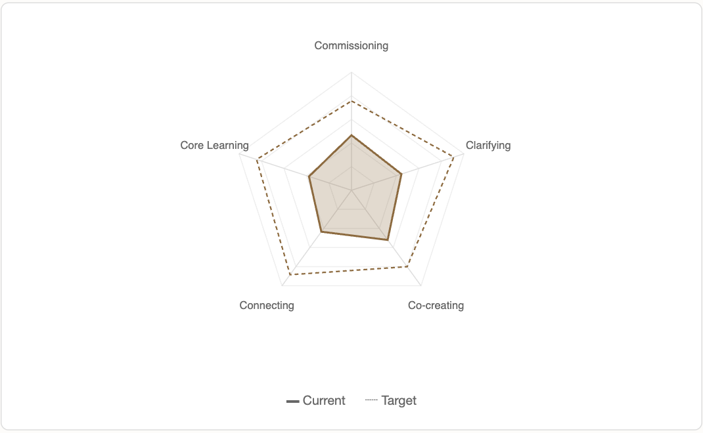

The problem
Team coaches often run a five-discipline team assessment on paper: hand out forms, tally the scores, draw a chart. The richest signal gets lost in that process. It is not the average score but the disagreement between team members, which a mean hides. A coach also cannot promise anonymity convincingly when they are the one holding the forms.
The sharpest small version that proves the idea: one coach, one team, one assessment. Members score anonymously; the coach sees the profile, the gap to where the team wants to be, and where members disagree.

Design: anonymity as architecture
Trust is the product in a diagnostic, so privacy is enforced by structure rather than promised in copy.
No member accounts
Each team link carries a long, unguessable token. Members open it on any device, nothing to install or sign into. Answers autosave on their device.
A minimum-response gate
Results stay hidden, showing only a count, until enough people have answered. In a small team that is what stops individual scores being identifiable. The floor is enforced server-side, with a minimum of two.
Divergence, not just averages
Beyond current and target, the results rank indicators by spread: where members score furthest apart. That is usually the conversation worth having.
Trend across runs
Re-running the same assessment later shows per-indicator movement, sorted by how much changed, with overlaid profiles.
Engine and content kept separate
The first version had the questionnaire hard-coded in the scoring code. I refactored it into a data model: questionnaire content now lives in a template table, and the shipped default is flagged as third-party licensed. The engine (scoring, aggregation, radar, PDF) is original and framework-agnostic, so a licensing question can only ever gate one template, never the whole platform.
Engineering
Static-first, no tracking, WCAG 2.2 AA. A static frontend with no build step, a thin FastAPI backend, Postgres in production and SQLite locally.
46 tests, CI on every push
pytest covers auth, scoring validation, gate arithmetic, trend maths and PDF output, run in GitHub Actions.
Found by testing the real thing
My own click-through caught what automated tests missed: the PDF omitted the radar chart. Fixed with a server-rendered image that mirrors the on-screen geometry.
Security pass before handover
Fixed a stored-XSS bug (free-text notes rendered as raw HTML), throttled wrong-key attempts, and turned off the auto-generated API docs.
Pinned dependencies
A fresh install pulled a newer ORM release that breaks the app, so the next unpinned deploy would have taken it down. Versions are now pinned.
Rehearsed deploys
Two full dry runs on scratch hosting and a scratch database, both deleted after, surfaced a Postgres-only foreign-key ordering bug on delete and a root-directory misconfiguration.
Backup and restore
One-file export and import, tested for clean restore and for skipping duplicates, so ownership can move without losing data.
The handover
The tool holds sensitive material by nature, so ownership mattered as much as features. The plan was simple: the practitioner owns everything and I keep zero access.
- A clean copy of the repository, scanned for keys, URLs and names, was built by a script that aborts if a sensitive file slips in, then transferred to the practitioner's own GitHub account.
- They deployed it on their own hosting and database in a guided session. I wrote the browser-only setup guide, a developer guide and a sample walkthrough for whoever maintains it next.
- I rotated the access key on my own test copy, which holds only sample data, and logged out of the hosting CLI, so nothing of mine sits in their path.
Early use confirmed the core flow worked; the practitioner described it as promising after running a first diagnostic. What I would do next, and deliberately did not: multi-tenant support (separate accounts per coach) is a different product with its own licensing and data-isolation questions, and it is a conversation to have with the person it is for, not something to infer from the tool working.
Stack: FastAPI · SQLModel · Postgres/SQLite · static HTML/CSS/JS · Pillow (server-rendered chart) · pytest · GitHub Actions · Vercel. Source repository now belongs to its new owner.